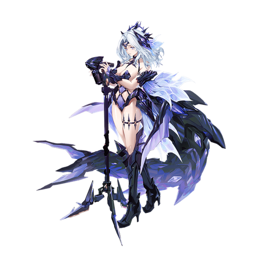

基本データ
- コスト
- 3.0
- 体力
- 未入力
- 赤ロック
- 33
- 動画
- 登録動画

Move Table
| 射撃 | 名称 | 弾数 | 威力 | 備考 |
|---|---|---|---|---|
| メイン射撃 | 海の光 | 7 | 210 | 標準的なビーム |
| サブ射撃 | 幻海の儚い泡 | 2 | 211 | 拘束時間の長い射撃 |
| 後サブ射撃 | トゲタツノオトシゴ | 1 | 150-384 | 3連射 |
| サブ格闘 | 巡遊 | - | - | 巡遊状態に移行 |
| 巡遊状態 | 名称 | 弾数 | 威力 | 備考 |
| モード中メイン射撃 | 水と泡 | 3 | 345 | 強制ダウン |
| 連動 トゲタツノオトシゴ | 345 | - | 本体に続き強制ダウンビーム | |
| モード中サブ射撃 | トゲタツノオトシゴ・協力 | 1 | 667 | 滑りつつ照射ビーム |
| 連動 トゲタツノオトシゴ | 本体に続き照射ビーム | - | - | |
| モード中横サブ射撃 | トゲタツノオトシゴ・援護 | 2 | 45-500 | レバー方向に動きつつ10連射 |
| 連動 トゲタツノオトシゴ | 本体と逆方向に動き10連射 | - | - | |
| モード中サブ格闘 | 深海の蛇影 | 1 | 62-280 | 蛇行突撃しつつ5連射 |
| モード中横/後サブ格闘 | 渦流の尾撃 | 1 | 337 | 6連射しつつ変形解除 |
| モード中後格闘 | 深海の恐怖 | 1 | 217 | スパアマ付きプレッシャー |
| 格闘 | 名称 | 入力 | 弾数 | 威力 | 備考 |
|---|---|---|---|---|---|
| メイン格闘 | 激流の戟 | NNN | - | 577 | 標準的な3段。出し切り受身不可 メ射派生 |
| 凍骨のしらべ | N→メ射 | - | - | 438 | 受身不可で飛ばす サ射派生 |
| 渦流の舞 | N→サ射 | - | - | 544～663 | 長押し対応。出し切り強制ダウン サ格派生 |
| 儚い泡の消滅 | N→サブ格 | - | - | 592 | 変形しつつ打ち上げ |
| 横格闘 | 激流の戟 | 横N | - | 740 | 完走まで長い。出し切り強制ダウン メ射派生 |
| 凍骨のしらべ | 横→メ射 | - | - | 493 | N格闘と同様 サ射派生 |
| 渦流の舞 | 横→サブ格 | - | - | 586~691 サ格派生 | |
| 儚い泡の消失 | 横N→サブ格 | - | - | 645 | |
| 前格闘 | タイダルインパクト | 前 | - | 30-558 | 出っ放し格闘 |
| 後格闘 | 幻海のエレジー | 後 | 1 | 608 | 格闘カウンター |
| モード中メイン格闘 | 激流の戟 | NNN | - | 767 | 縦に動くが完走まで長い メ射派生 |
| 凍骨のしらべ | N→メ射 | - | - | 423 | N格闘と同様 サ射派生 |
| 渦流の舞 | N→サブ格 | - | - | 550~673 サ格派生 | |
| 渦流の尾撃 | N→サブ格 | - | - | 616 | N格闘と同様。キャンセル不可 |
| モード中前格闘 | 怒涛の突き | 前 | - | 315 | フワ格 |
| 特殊武装 | 名称 | 入力 | 弾数 | 威力 | 備考 |
| ガード | 深海の静謐 | 盾 | 1 | - | 全方位ガード 3凸後、派生技が解禁 メ射派生 |
| 盾→メ射 | - | - | 62~ | 周囲に射撃。レバー方向に移動 サ射派生 | |
| 盾→サブ射 | （2） | - | 211 | サブ射撃と弾数共有。メインキャンセル可 メ格派生 | |
| 盾→サブ格 | - | - | 656 | 出っ放し格闘。良補正 | |
| バーストアタック | 名称 | - | 威力 | ||
| バーストアタック | 淵海の疾駆 | - | //827/ | 前方に波を打ち出す。発動後巡遊状態に移行 |